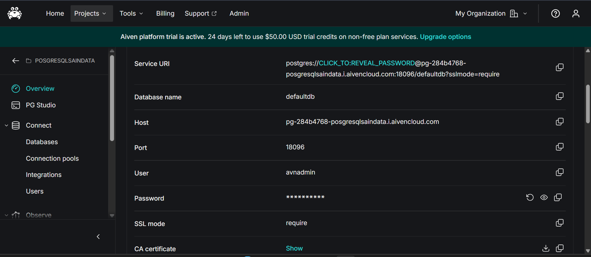
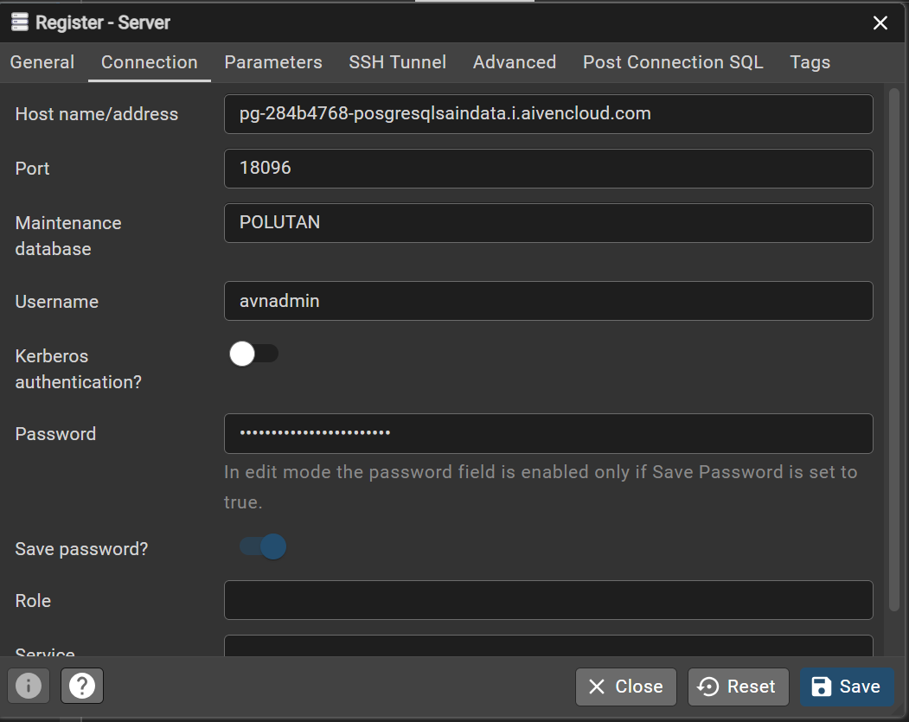
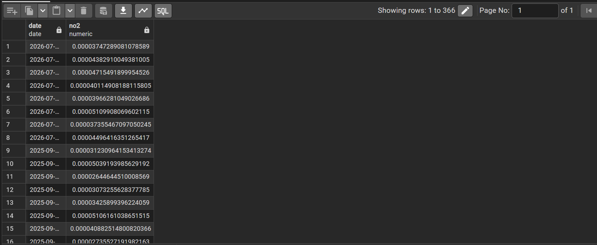
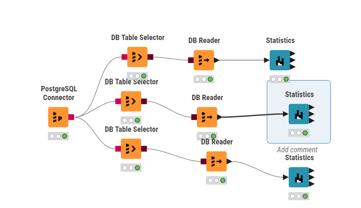
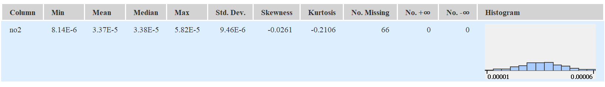

Laporan Analisis Statistika Deskriptif Polutan Udara (\(NO_2\))#
Bagian 1: Penjelasan Metrik Statistika Deskriptif#
Dalam analisis data, ringkasan metrik yang disajikan dalam bentuk tabel disebut sebagai Statistika Deskriptif (Descriptive Statistics). Ringkasan ini umumnya dimanfaatkan pada tahap awal analisis, yakni Exploratory Data Analysis (EDA). Tujuannya adalah untuk memahami karakteristik, pola distribusi, serta kualitas data sebelum beralih ke tahap pemrosesan lanjutan, peramalan (forecasting), maupun pemodelan.
Tabel ringkasan menyajikan metrik untuk variabel konsentrasi polutan udara, khususnya Nitrogen Dioksida (\(NO_2\)). Berikut merupakan penjelasan untuk masing-masing metrik beserta metode perhitungan manualnya:
1. Min & Max#
Penjelasan: Merupakan nilai observasi terendah (Min) dan tertinggi (Max) dalam suatu kumpulan data. Metrik ini berguna untuk mengidentifikasi batas bawah dan batas atas dari rentang data.
Perhitungan Manual: Urutkan seluruh data mulai dari nilai yang terkecil hingga yang terbesar.
\(Min = X_1\) (Data pada urutan pertama)
\(Max = X_n\) (Data pada urutan terakhir)
2. Mean#
Penjelasan: Merupakan nilai pusat (rata-rata) dari sekumpulan data. Nilai ini diperoleh dengan menjumlahkan seluruh observasi, kemudian membaginya dengan total jumlah observasi yang valid.
Perhitungan Manual: \( \bar{x} = \frac{\sum_{i=1}^{n} x_i}{n} \)
3. Std. Deviation (Standar Deviasi)#
Penjelasan: Mengukur sejauh mana rata-rata simpangan titik-titik data terhadap nilai Mean-nya. Standar deviasi yang rendah mengindikasikan bahwa data cenderung mengelompok di sekitar rata-rata (konsisten), sementara nilai yang tinggi menunjukkan adanya rentang fluktuasi yang lebar.
Perhitungan Manual (Sampel): \( s = \sqrt{\frac{\sum_{i=1}^{n} (x_i - \bar{x})^2}{n-1}} \)
4. Variance (Varians)#
Penjelasan: Merupakan rata-rata dari kuadrat selisih antara setiap titik data dengan nilai Mean. Secara matematis, varians adalah nilai kuadrat dari Standar Deviasi.
Perhitungan Manual (Sampel): \( s^2 = \frac{\sum_{i=1}^{n} (x_i - \bar{x})^2}{n-1} \)
5. Skewness#
Penjelasan: Mengukur tingkat asimetri (ketidakseimbangan) distribusi data terhadap nilai rata-ratanya.
Skewness = 0: Data terdistribusi secara simetris (normal) dan berpusat di tengah.
Skewness > 0 (Positif): Ekor distribusi memanjang ke arah kanan.
Skewness < 0 (Negatif): Ekor distribusi memanjang ke arah kiri.
Perhitungan Manual (Fisher-Pearson): \( Skewness = \frac{n}{(n-1)(n-2)} \sum_{i=1}^{n} \left(\frac{x_i - \bar{x}}{s}\right)^3 \)
6. Kurtosis#
Penjelasan: Mengukur tingkat keruncingan atau bobot ekor (tailedness) dari suatu distribusi data. Metrik ini menunjukkan seberapa ekstrem outlier (pencilan) yang ada di dalam data.
Kurtosis \approx 0: Distribusi normal (Mesokurtik).
Kurtosis > 0: Memiliki puncak yang tajam dengan ekor yang tebal (Leptokurtik).
Kurtosis < 0: Puncaknya cenderung lebih datar dibandingkan distribusi normal (Platikurtik).
Perhitungan Manual (Excess Kurtosis Sampel): \( Kurtosis = \left[ \frac{n(n+1)}{(n-1)(n-2)(n-3)} \sum \left(\frac{x_i - \bar{x}}{s}\right)^4 \right] - \frac{3(n-1)^2}{(n-2)(n-3)} \)
7. Overall Sum#
Penjelasan: Merupakan jumlah total dari keseluruhan nilai pada variabel yang bersangkutan.
Perhitungan Manual: \( Sum = \sum_{i=1}^{n} x_i \)
8. Metrik Kualitas / Anomali Data#
No. missings: Menunjukkan jumlah sel yang kosong (NULL / NA) akibat data tidak berhasil terekam.
No. NaNs (Not a Number): Menunjukkan jumlah entri yang nilainya tidak terdefinisi secara matematis.
No. +infs / No. -infs: Menunjukkan adanya nilai batas tak terhingga.
Perhitungan Manual: Menghitung frekuensi kemunculan baris yang memuat nilai-nilai khusus tersebut.
9. Median#
Penjelasan: Merupakan nilai yang persis berada di tengah kumpulan data setelah diurutkan. Median tidak rentan terhadap pengaruh nilai outlier yang ekstrem.
Perhitungan Manual: Urutkan seluruh data mulai dari \(X_1\) hingga \(X_n\).
Bila \(n\) ganjil: \(Median = X_{(n+1)/2}\)
Bila \(n\) genap: \(Median = \frac{X_{n/2} + X_{(n/2)+1}}{2}\)
Bagian 2: Implementasi Analisis Data Polutan (Dari Cloud Database ke KNIME)#
Panduan ini menguraikan tahapan-tahapan untuk menghubungkan database PostgreSQL di platform Aiven, melakukan inspeksi data, serta mengekstraksi metrik statistika deskriptif memanfaatkan KNIME Analytics Platform.
Langkah 1: Memperoleh Kredensial Database dari Aiven#
Akses dashboard atau console Aiven, lalu arahkan ke proyek yang dimiliki.
Buka tab Overview pada layanan PostgreSQL yang sedang beroperasi (
pg-c4fbe52).Pada bagian Connection information, catat parameter berikut:
Host:
pg-284b4768-posgresqlsaindata.i.aivencloud.comPort:
18096User:
avnadminPassword: (Salin kata sandi rahasia)
SSL mode:
require

Langkah 2: Mengonfigurasi Koneksi di pgAdmin 4#
Buka aplikasi pgAdmin 4. Pada panel kiri, klik kanan pada Servers > Register > Server…
Pada tab General, isikan nama koneksi (contoh:
Aiven PSD).Beralih ke tab Connection, isikan Host, Port, Maintenance database (
PSD_Polutan), Username, dan Password.Klik Save untuk menyimpan konfigurasi.

Langkah 3: Melakukan Inspeksi Tabel Data di pgAdmin 4#
Navigasikan tree server menuju Databases >
POLUTAN> Schemas >public> Tables >NO2.Klik kanan pada tabel
NO2, pilih View/Edit Data > All Rows.Pastikan kolom data time-series (
date,no2) ditampilkan dengan tepat. Nilai[null]wajar ditemukan dan akan diproses sebagai missing values.

Langkah 4: Menyusun Alur Kerja (Workflow) di KNIME#
Jalankan KNIME Analytics Platform lalu buat workflow baru.
Tarik node berikut ke workspace: PostgreSQL Connector, DB Table Selector, DB Reader, dan Statistics.
Hubungkan setiap node secara berurutan.
Konfigurasi PostgreSQL Connector dengan kredensial database Anda, lalu atur DB Table Selector untuk memilih tabel
NO2(fokus pada kolomno2).Jalankan (Execute) hingga lampu indikator berwarna hijau.

Langkah 5: Membaca Output Statistika Deskriptif#
Klik kanan pada node Statistics kemudian pilih Execute.
Klik kanan kembali lalu pilih Statistics View.
Tabel metrik statistik akan ditampilkan, memuat informasi Min, Max, Mean, Std. Deviation, Variance, Skewness, Kurtosis, Missing Values, dan visualisasi Histogram khusus untuk \(NO_2\).

Bagian 3: Perhitungan Manual Berdasarkan Dataset Aktual (\(NO_2\))#
Berikut adalah penjabaran langkah-langkah perhitungan manual menggunakan rumus matematis yang didasarkan pada dataset mentah asli (NO2_Timeseries.csv).
Diketahui total baris observasi adalah 366. Karena terdapat 66 data kosong, maka jumlah data valid (\(n\)) adalah 300, dengan rata-rata (\(\bar{x}\)) 0.000033686.
1. Standar Deviasi (\(s\))
2. Variansi (\(v\))
3. Skewness
\(A = \frac{300}{(299)(298)} = 0.003367\)
\(B = \sum_{i=1}^{300}\left(\frac{x_i - 0.00003369}{0.000009455}\right)^3 = -7.762158\)
\(Skewness = 0.003367 \times (-7.762158) = \mathbf{-0.02613}\)
4. Kurtosis
\(A = \frac{300(301)}{(299)(298)(297)} = 0.003412\)
\(B = \sum_{i=1}^{300}\left(\frac{x_i - 0.00003369}{0.000009455}\right)^4 = 826.3628\)
\(C = \frac{3(299)^2}{(298)(297)} = 3.030337\)
\(Kurtosis = (0.003412 \times 826.3628) - 3.030337 = 2.819776 - 3.030337 = \mathbf{-0.2106}\)
5. Overall Sum (\(OS\))